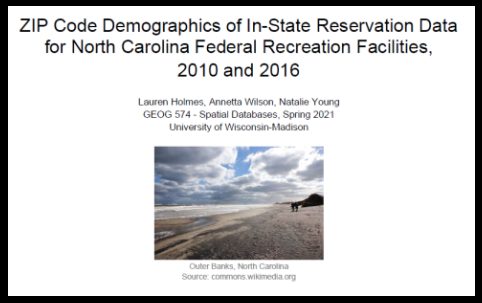
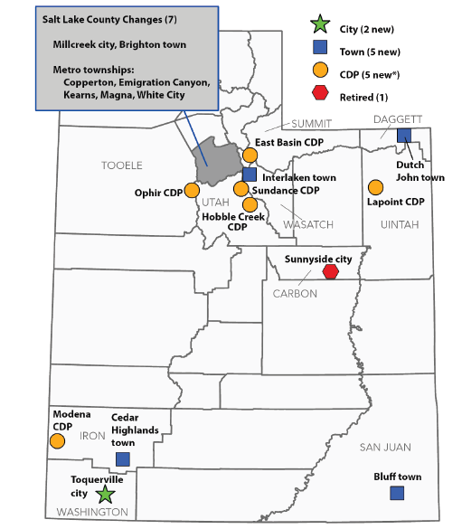

ABOUT
Natalie Young
Geographer, Data Analyst, Researcher, Mapmaker
I'm a GIS professional and master's student. When I first used Google Earth, I was hooked. It led me to study geography and GIS. After obtaining my bachelor's degree, I worked in GIS-centric positions in gas utiltiies and demographic research for ten years in Salt Lake City, Utah. I loved the cultural and outdoor life offered there. My family and I recently moved from the Beehive State to the Evergreen State, another dynamic place to explore.
My aim is to continue applying GIS and visualization to a variety of projects as I continue my career. I love to help build others' skills, so I'm also very interested in teaching GIS someday.
I'm available part-time for your mapping or analysis needs in 2022! Contact nataliebyoung@gmail.com
Bike Tour Map: Illustrator and Photoshop
I designed my own Tour de France (Outside France...)!
I made this map for my Graphic Design in Cartography class at the University of Wisconsin. I planned an imaginary bike race route going from Kelowna, British Columbia to Helena, Montana. My assignment was to design a route about as long as the Tour de France, with multiple stages and rest days, and then to map the route with shaded relief and land cover as the background. The route also had to be across varied terrain and include mountainous sections.
Google MyMaps is a handy tool for obtaining driving or biking directions across multiple stops. I had a great time designing a route through some of my favorite territory on earth! MyMaps allowed for .kml file creation, which I then imported into ArcGIS Pro. I processed background images in Photoshop and then put it all together in Illustrator. The final map product is approximately 24 x 36 inches; only a screenshot is shown here. I designed my own land cover colors and textures; the shaded relief shown is an ESRI world hillshade.
- Tools Used: Adobe Illustrator and Photoshop, ArcGIS Pro, Google MyMaps
- Student Project
Tableau Population Visualization
A three-in-one visualization sharing research findings with the public
Interactive visualizations give the user power to explore research findings across several variables. This visualization allows the user to explore changes in population - and many other variables - as trends over time or as rankings across a type of geography. There’s also a map view for census tract results. It distills a large amount of research data into a clean and simple interactive.
Click the image to open the visualization:
The visualization shares findings from original population estimates research that my team and I produced at the University of Utah. We examined annual population changes at the census tract and city level across Utah’s two most populous counties (Salt Lake County and Utah County). The full research report and other resources are here. My colleague Emily Harris offered me a lot of advice for improving my Tableau creations - thanks!
- Tools Used: Tableau, Stata
- Professional Work
Census Data Access & Analysis
NC National Park Visitation Analysis
Is in-state visitation to North Carolina’s federal recreation facilities representative of the state’s population? This group project addresses that question using American Community Survey data from the U.S. Census Bureau. One of my roles was to analyze our data on income, age, and racial-ethnic minority status. I compiled data tables and wrote the demographic results and discussion section of our paper.
The broad context of our assignment, part of a spatial databases class, was to create a database and query and analyze the data to help answer our research question.
Click the image to open our group project report:
While this project is one example of interpreting demographic data, I have had many other experiences doing so. Having worked on a demographic research team, analyzing U.S. Census Bureau data was everyday business. I have experience accessing and analyzing a large variety of U.S. Census Bureau data via raw data files, data.census.gov, and other Census Bureau sites.
- Tools Used: ArcGIS Pro
- Student Project
Census Geography Expertise
I navigate the blocks, tracts, and CDPs!
Map: Utah Places with Changed Status, Census 2020
The map above shows changes to Utah places (cities, towns, etc.) that occurred between the 2010 and 2020 censuses. This map is published in a quick reference sheet highlighting changes in Utah’s census geography over that decade. While working as a research analyst in demographics, we created the report to help orient data users to the changes in Utah’s geography before the receipt of the demographic census data.
- Tools Used: ArcGIS Pro
- Professional Work
Salt Lake City Story Maps
Visual Data Storytelling
As a research analyst in demographics, I collaborated with colleague Mallory Bateman to create a series of story maps explaining the demographic basics of Salt Lake City. These visual stories combine text, images, maps, and charts, and strive to walk the reader through the information in an engaging way.
Click the image below to view one story map in the series. I was the main author and compiler of this story, which is focused on educational attainment in Salt Lake City.
- Tools Used: ESRI Story Maps
- Professional Work